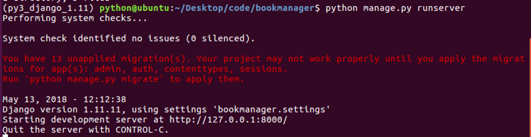

创建工程
在使用Flask框架时，项目工程目录的组织与创建是需要我们自己手动创建完成的。
在django中，项目工程目录可以借助django提供的命令帮助我们创建。
1. 创建
创建工程的命令为：
django-admin startproject 工程名称
例如：想要在桌面的code目录中创建一个名为bookmanager的项目工程，可执行如下命令：
cd ~/Desktop/Code
django-admin startproject bookmanager
执行后，会多出一个新目录名为bookmanager，此即为新创建的工程目录。
2. 工程目录说明
查看创建的工程目录，结构如下

- 与项目同名的目录，此处为bookmanager。
- settings.py是项目的整体配置文件。
- urls.py是项目的URL配置文件。
- wsgi.py是项目与WSGI兼容的Web服务器入口。
- manage.py是项目管理文件，通过它管理项目。
3. 运行开发服务器
在开发阶段，为了能够快速预览到开发的效果，django提供了一个纯python编写的轻量级web服务器，仅在开发阶段使用。
运行服务器命令如下：
python manage.py runserver ip:端口
或：
python manage.py runserver
可以不写IP和端口，默认IP是127.0.0.1，默认端口为8000。
启动后可见如下信息：

在浏览器中输入网址“127.0.0.1:8000”便可看到效果。

- django默认工作在调式Debug模式下，如果增加、修改、删除文件，服务器会自动重启。
- 按ctrl+c停止服务器。